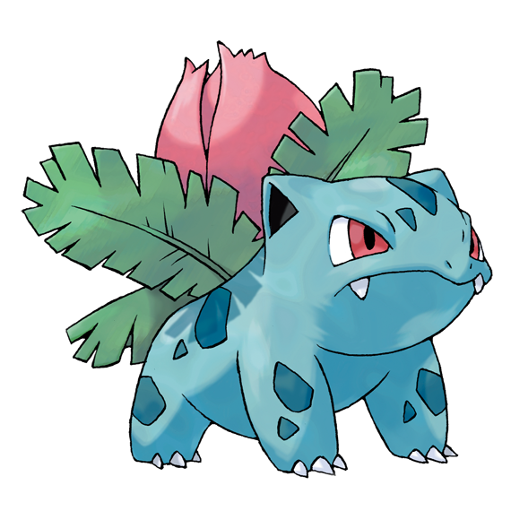
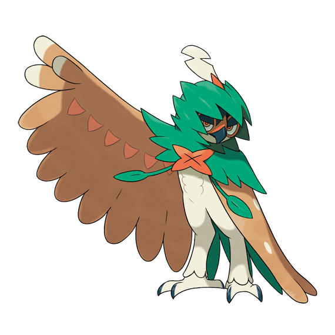

url('https://webkod.pl/images/para2.png'),
url('https://webkod.pl/images/para3.png');
animation:ruch 300s linear infinite alternate;
Pokédex to jeden z głównych elementów gry Pokémon Go,
znajdują się w nim informacje dotyczące wszystkich
aktualnie złapanych gatunków Pokémonów przez trenera.
Bulbasaur is a small, quadrupedal amphibian Pokémon that has blue-green skin with darker patches. It has red eyes with white pupils, pointed, ear-like structures on top of its head, and a short, blunt snout with a wide mouth. A pair of small, pointed teeth are visible in the upper jaw when its mouth is open. Each of its thick legs ends with three sharp claws. On Bulbasaur's back is a green plant bulb that conceals two slender, tentacle-like vines, which is grown from a seed planted there at birth. The bulb also provides it with energy through photosynthesis as well as from the nutrient-rich seeds contained within.
As mentioned in the anime, starter Pokémon are raised by Breeders to be distributed to new Trainers. Having been domesticated from birth, Bulbasaur is regarded as both a rare and well-behaved Pokémon. It is known to be extremely loyal, even after long-term abandonment. Bulbasaur in the anime have demonstrated a nurturing instinct towards younger, weaker Pokémon, one individual even using its vines to pick up a crying Pokémon, gently rocking it back and forth through the air while singin.

Ivysaur is a quadrupedal amphibian Pokémon that has blue-green skin with darker patches. On top of its head are pointed ears with black insides and it has narrow red eyes. Ivysaur has a short, rounded snout with a wide mouth and two pointed teeth in its upper jaw. Each of its feet has three claws on them. The bulb on its back has bloomed into a large pink bud. A short brown trunk surrounded by leafy green fronds supports the bud.
The weight of the plant prevents Ivysaur from running fast and standing on its hind legs, forcing its legs to grow sturdy. When its flower is ready to bloom, it gives off a distinct, sweet-smelling aroma and starts swelling. Ivysaur will also start spending more time in sunlight in preparation for its upcoming evolution. Exposure to sunlight adds to the strength of both Ivysaur and its plant. Ivysaur are typically found in plains.
Venusaur is a squat, quadrupedal amphibian Pokémon with bumpy, blue-green skin. It has small, circular red eyes and a short, blunt snout. Its mouth is wide with two pointed teeth in the upper jaw and four in the lower jaw. On top of its head are small, pointed ears with reddish pink insides. It has three clawed toes on each foot. The bud on its back has bloomed into a large pink, white-spotted flower. The flower is supported by a thick, brown trunk surrounded by green fronds. A female Venusaur has a seed in the center of its flower.
Venusaur uses its flower to catch the sun's rays to convert them into energy, which causes the flower to become more vibrant. The flower releases a soothing scent that attracts Pokémon and calms emotions. This scent becomes stronger after a rainy day. In the anime, Venusaur has demonstrated the ability to manipulate nature, release several vines from its back, and lead evolution ceremonies for Bulbasaur and Ivysaur. This Pokémon is rarely found in the wild, but it has been known to inhabit grasslands.
Grookey to mały, podobny do małpy Pokémon z zielonym ciałem, brązowym ogonem, brązowymi uszami w kształcie klina, pomarańczowymi dłońmi i stopami oraz pomarańczowym pyskiem. Każda z jego rąk ma pięć palców, podczas gdy każda z jego stóp ma trzy palce. Ma dwoje dużych białych oczu z czarnymi tęczówkami. Limonkowo-zielony wzór maski otacza jego oczy i rozciąga się w kierunku czoła w małym guzku nad pyskiem.
Grookey ma dwie kępki włosów w kształcie liścia, które trzymają patyk na czubku głowy. Kij był kiedyś gałęzią z lasu, w którym żyły oddziały Grookeya, i ma specjalną moc wynikającą z wystawienia na działanie energii w ciele Grookeya. Oprócz używania go podczas ataku, Grookey rytmicznie uderza tym kijem o powierzchnie wszelkiego rodzaju przedmiotów.
Thwackey is a bipedal, humanoid monkey Pokémon with a light-green body, and lighter green markings on its face and chest. Its ears, arms, and tail are dark brown, and its two large eyes are yellow in color. It has dark green bands around its wrists, and the stick it holds splits in two after its evolution,[1] which it uses to hold up a tuft of leaves resembling hair on its head. When it removes the sticks, the leaves resemble a mohawk, with a dark-green color on the ends. It has several sharp teeth.
Thwackey can use its two sticks to create a rhythmic beat. The faster a rhythm Thwackey creates, the more respect it earns from its peers. Often, when it drums out rapid beats in battle, Thwackey will get so caught up in the rhythm that it does not realize its opponent has been knocked out. To further develop its sense of rhythm, it constantly uses it in daily life. It can always feel a beat, and it walks while swaying back and forth to this beat, along with drumming with its sticks.[1] As seen in the anime, Thwackey can groom its friends to cheer them up; this is its way to show friendship and trust.
Rillaboom is a bipedal Pokémon resembling a gorilla. Its body consists mostly of shades of brown: light, tan brown on its forehead, chest, abs, and extremities; dark brown on its nose and triangular ears, as well as under its eyes; and medium, mud-like brown across the rest of its body, including its thick arms and legs. Its mouth, the tip of its nose, and its irises are orange, and its sclerae are white. Each of its upper arms have tan marks resembling bow-ties or butterflies, and it has two, diamond-shaped, tan marks running down its spine. The first, and larger, of the two marks begins around its shoulder blades, and the second, and smaller, mark begins below its rib cage. Rillaboom has a thick bush of green, leaf-like hair on its head, which cascades down its back; on its forehead, a single, vine-like hair, which closely resembles a music note, falls between its eyes and curls at the end, which sits to its nose's left side. On its hips on either side, it has green, belt-like adornments resembling four leaves in a row. Similar adornments with two leaf-like parts sit on its each of its shoulders near the clavicles; these adornments appear to be part of its hair when not attacking. On each of its wrists, Rillaboom has cuffs that resemble leafy crowns, with the peaks of the crown facing its hands.
Rillaboom always carries its signature drum with it on its back, and pulls it out when engaged in battle. This bass drum is crafted from a tree stump, with several thick branch stumps protruding from it, which form both the legs of the bass drum as well as mid and high toms. Rillaboom also carries two drumsticks in its cuffs and takes them out to beat its drum
Rowlet is a small, avian Pokémon resembling a young owl with a round body and short legs. Its plumage is primarily beige with a white underside and facial disc. The facial disc itself is in the shape of two overlapping circles. It has large black eyes and a stubby beak. The top part of its beak is white, while the lower half is orange-brown. Its feet have two forward-facing toes and one backward-facing toe; they are the same color as the lower half of its beak. Two leaves sprout from its chest arranged to resemble a bowtie. Additional leaves form its tail and line the undersides of its wings.
A nocturnal Pokémon, it stores energy during the day through photosynthesis. It approaches opponents by silently gliding, before unleashing a volley of kicks. This Pokémon is able to rotate its head almost 180 degrees and has excellent night vision.[1] Its feathers are as sharp as blades, which it launches at foes from the air. Rowlet feel most relaxed in tight, dark spaces.
Rowlet and its evolved forms are the only known Pokémon that can have the Ability Long Reach.
Dartrix is an avian Pokémon that resembles an owl. Most of its plumage, including its heart-shaped facial disc, is white, but it has dark brown feathers covering its head, shoulders, and back. Its large eyes contain dark irises and usually appear closed. It also has a stubby beak with a white upper jaw and an orange-brown lower jaw, and a few short tufts of feathers on the back of its head. Two green leaves curve around its face, resembling an asymmetric cut; the leaf on its right is longer than the one on the left. Under its chin are two smaller leaves that resemble a bowtie, and there are two pointed ones on its rear that form its tail. Its wings have two tan spots on the upper side and leafy plumage close to the body on the underside. Within the leaves under its wings are two sharp orange-brown feathers known as blade quills. Dartrix has orange-brown talons with two toes facing forward and one facing backward.
This alert Pokémon is sensitive to the presence of others around it, and is capable of launching attacks on unseen enemies behind it. It propels its blade quills at enemies or prey with astounding precision. By bending the feathers, it can even alter the trajectory of its strikes. Dartrix is narcissistic by nature, spending a lot of time grooming its feathers to maintain its appearance. This compulsion will occasionally lead to it losing focus when its plumage is ruffled or dirty, even retiring from battle to preen. It has been described as a bit of a birdbrain as it has a tendency to make mistakes; when it does, it sometimes tries to cover it up, which ends up making the situation worse. A Trainer who helps Dartrix through this difficult stage of its life will allow it to reach its full strength.[1] Conversely, Dartrix will refuse to listen to a Trainer who doesn't diligently help it groom.

Decidueye is a tall, avian Pokémon that resembles an owl. The upper portion of its face is dark green with a thin, orange mask-like marking encircling its eyes. Its eyes are reddish-orange and it has a hooked dark green beak. The feathers covering its wings and back are brown, while the rest of its body is primarily white. The three feathers at the tip of each wing are structured similar to fingers and have lighter tips. The backs of its wings and torso are dotted with many white spots, there are six on each wing. The inside of each wing has a line of upside-down, reddish-orange triangles across the top. It has long legs, feet with two toes facing forward and two backward, and short dark green talons. Its tail consists of three long, green leaves.
A leafy hood covers its head and shoulders, and partially covers its face. The hood is smoothly draped across the shoulders and back, but has uneven edges. Around the head, the hood forms many pointed projections that extend over its face. A single white feather with a reddish-orange base extends from the top of its hood. In the center of its chest is a reddish-orange X shape formed by dead leaves. Extending from its hood are two vines that, when pulled, close the hood further over Decidueye's face and improves its focus. The vines can also be used as bowstrings.
While this Pokémon is cool and cautious by nature, it begins to panic if surprised.